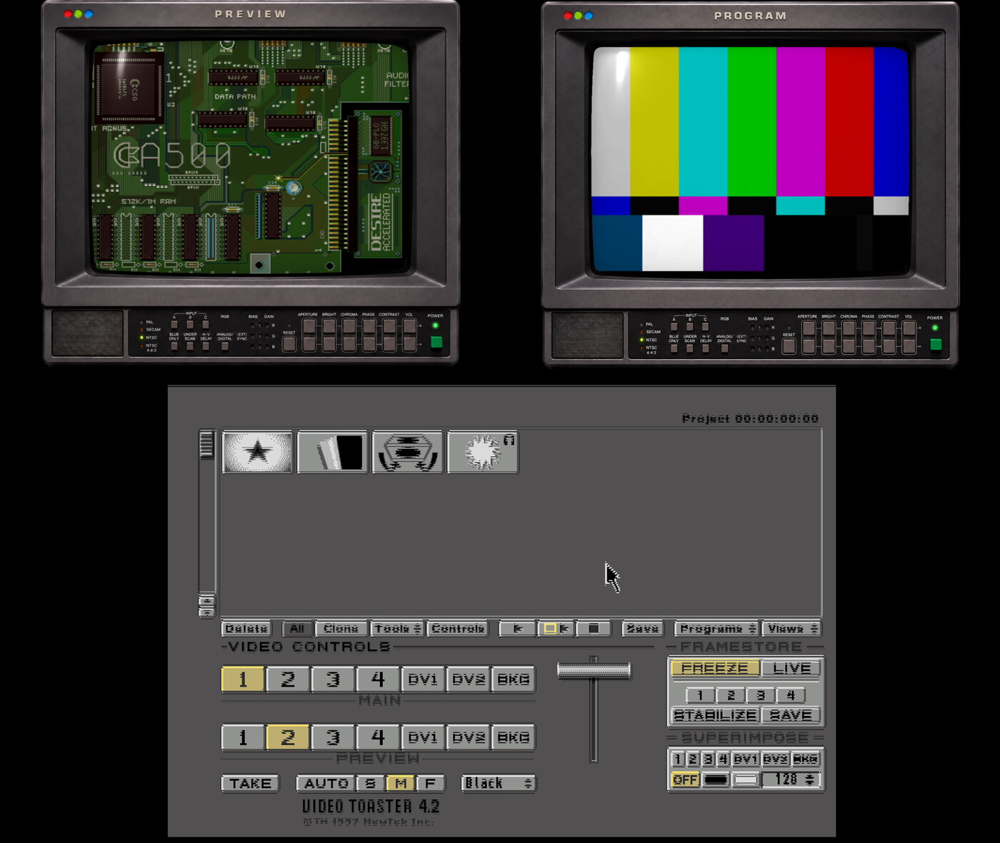
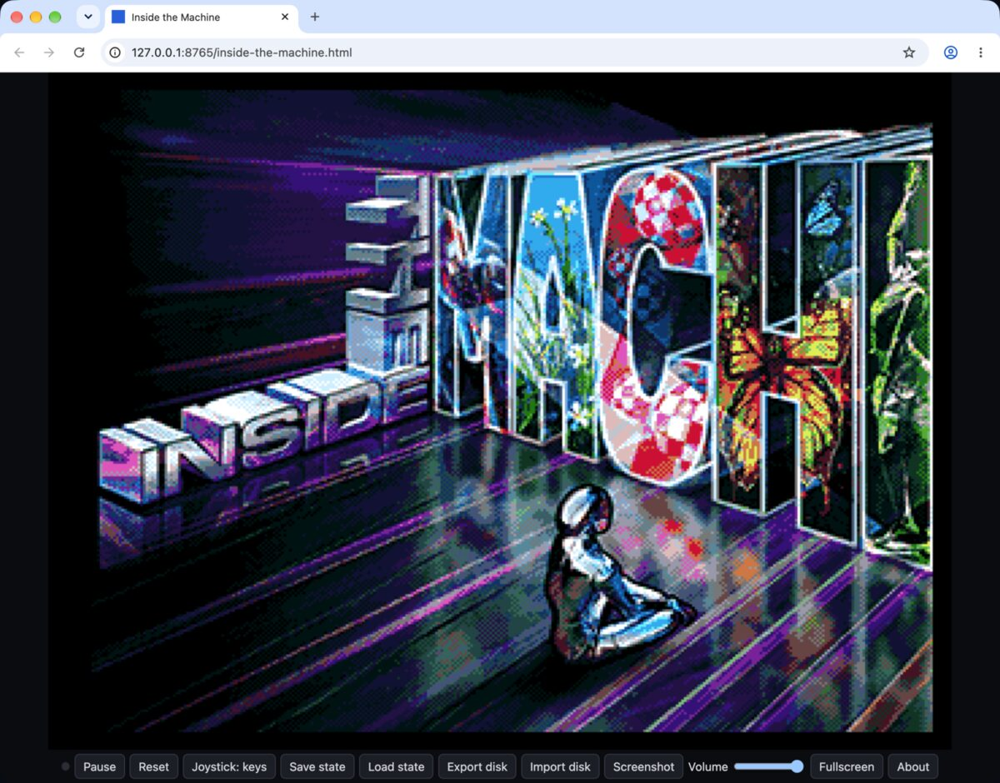
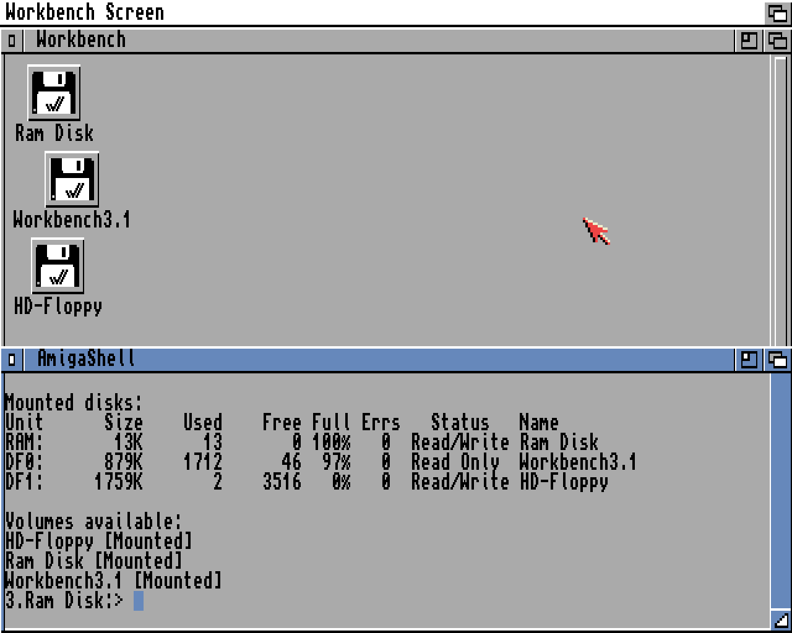

Copperline 1.2.0: a Video Toaster, the A2000 and an Amiga in your terminal
Copperline 1.2.0 is the second feature release of the 1.x series. It adds a video slot to the A4000 with an emulated NewTek Video Toaster 4000 and Video Flyer, an Amiga 2000 profile, a terminal display that also works over SSH, single-file web pages for floppy titles, high-density floppies and MP4 recording. The CPU core gains a long list of conformance fixes, Copper, sprite, beam-counter and interrupt timing are corrected, and every fix made on the 1.x branch since 1.1.0 is included.
Video Toaster 4000 and Video Flyer
TronMetatron has added a video slot to the A4000 and an emulated NewTek Video Toaster 4000 to fit in it. With [video_slot] card = "toaster", the NewTek switcher (Toaster 4.x) starts, passes its own card tests and runs its muxes, fader, keys, framestores, wipes and digital video effects. The card's four inputs, its recordings and the Flyer's drives are folders on the host: drop video files or stills into an input folder and they play into the switcher, with ffmpeg decoding the video. Preview and Program open in monitor windows with working front panels, and Program records to MP4 or AVI.

flyer = true fits the NewTek Video Flyer beside it, which plays clips and sequences, with their sound, into inputs 3 and 4. The flyerclip and flyer-convert tools in source and Homebrew builds convert video files to and from Flyer clips, and an MCP client can drive the Toaster software through its ARexx ports and manage Flyer clips.
The card supplies genlock sync while it is fitted, and [chipset] genlock = true now fits an external genlock on its own: BPLCON0.ERSY slaves the beam to it instead of stopping the counters, and Kickstart's genlock probe finds it. The Toaster software and the Kickstart ROM are not included. See video slot.
Amiga 2000
--model A2000, or the machine selector on the configuration screen, builds a B2000 Rev 6.x: the 8372A Agnus and OCS Denise, 1M of chip RAM, the battery-backed MSM6242 clock and its Zorro II slots. The Rev 4.x and late Rev 6 boards are overrides on it, and the FS-UAE and WinUAE importers map their A2000 to it. Thanks to strongkm for the request; the Bridgeboard is still to come.
An Amiga in your terminal
--terminal shows and drives the machine inside a terminal that speaks the Kitty graphics and keyboard protocols (kitty, Ghostty, WezTerm) instead of a window. No window server is involved, so it works the same over SSH: start Copperline on a remote build machine and drive the Amiga from your local terminal. Only changed frames are sent, and a slow link drops frames rather than slowing the machine. F12 is the host key, --terminal-fps caps the frame rate, and the terminal is given back however the session ends. It runs on macOS and Linux. See terminal display.
copperline --terminal, and no window at all. The clip contains rapidly flashing images. Still image.A game in one web page
tools/publish-web packs a floppy title into one self-contained HTML file: the browser emulator, the AROS boot ROM, the disk images and the licence texts. The page requests nothing but itself, so it runs from any static host or straight from disk. It has keyboard, mouse, gamepad and touch controls, a DF0 list for multi-disk titles and disk changes kept in the visitor's browser, and it offers a quick save state when the manifest allows it. It uses the same manifest as the player kit. See publishing.

tools/publish-web into one page, running in Chrome on the bundled AROS ROM.High-density floppies
1.76 MB HD ADFs, HD DMS archives, extended ADFs with 22-sector tracks and HD ADFs in ZIP files now load in every drive. As on an HD mechanism, density follows the inserted disk: an HD disk turns at half speed with 22 sectors per track, and the drive answers the ID poll as an HD drive only while one is in, so DD disks run as before. The guest needs an HD-aware trackdisk.device (Kickstart 1.x has none), and IPF images of HD disks are still refused.

info shows DF0: at 879K and DF1: at 1759K.Recording and the desktop
- MP4 recordings.
[recording] video_format = "mp4", or Recording → Video Format, makes recordings H.264/AAC MP4 files that common players open. The recorder still captures its lossless AVI and hands it to the host's ffmpeg when recording stops, keeping the AVI if there is no ffmpeg or it lacks libx264. AVI stays the default. Thanks to Nicolas Ramz for the suggestion. - Open files from the desktop. Files named on the command line or opened from a file manager start what they are: floppy images boot in DF0, WHDLoad archives, game folders and slaves boot directly, CD images go in a CD32 or CDTV drive, and a
.tomlfile loads as the configuration. The Windows installer registers Open with entries, the macOS app declares its document types to Finder, and the Linux tools archive addscopperline-desktop-setupto register them for your user. - Windows installers can install for the current user (the default) or for all users, and the executables carry their product name and version in Properties → Details.
- Command-line options accept
--flag=value, misspelled options suggest close matches, and fatal desktop-launch errors appear in a dialog. - The manual identifies its version and source revision, and gains troubleshooting, known limits and compatibility notes, and a changelog.
More hardware
- CD+G: CD subcode R-W data reaches the CD32 and the CDTV from images that stored it (a CloneCD-style
.subfile, a cue sheetCDGtrack or a CHD with raw subcode), and the CDTV drive now delivers subcode while a disc plays. - SCSI tape:
[[tape]]puts a tape drive on the[scsi]controller (A2091, A4091 or A3000). The cartridge is a host directory with one file per tape file, or a single file, sotararchives work as they stand. - CDTV bookmarks: the bookmark RAM is kept in
cdtv-bookmark.bin, so title saves and preferences survive between sessions. - Battery clocks can be set: the MSM6242 and RP5C01 take counter writes, so
SetClock SAVEworks. The host clock is never changed. - IDE geometry: an IDE drive reports the heads and sectors per track its Rigid Disk Block records, so a disk partitioned for another geometry keeps its last partition reachable.
CPU
- The CPU core is the published m68k 0.17.1, with about thirty conformance fixes found by solskogen's bare-metal amitorture suite. They cover DIVU/DIVS and CAS/CAS2 flags, trace after an exception, each model's exception frames, FPU exceptions taken through their vectors, and MMU table searches that write back the used and modified bits.
[cpu] unimplemented = "trap"now covers the 68040 as well as the 68060, so its unimplemented FPU instructions go to68040.libraryas on the real chip (see Before upgrading). amitorture's 68040 FPU failures dropped from 35 to 2.- The JIT runs the
[copperhf]driver and the[[filesys]]handlers from local memory, as it does Kickstart, so filesystem-heavy work on those volumes takes less than half the emulated time it did. - With the MMU in use (MMULib on a 68040, for example) the JIT costs about a quarter less host CPU time. Thanks to dlundqvist for the reports and benchmarks.
Chipset timing
- AGA playfields and sprites move in Lisa's 35 ns steps: BPLCON1's H1/H0 bits scroll a lo-res playfield by quarter pixels, SPRxCTL's fine bits position sprites in every mode, and collisions compare at the same pitch. SANITY's Roots 2.0 lines its sprite screen up this way.
- A sprite armed by the CPU or Copper with sprite DMA off is shown on every line and collides in every frame until it is disarmed, as on Denise, which has no vertical comparator.
- A Copper WAIT on line 255 compares all eight vertical bits, and after a CPU COPJMP strobe the Copper spends a bus-request cycle, so
clr.w COPJMP1no longer jumps through a half-written COP1LC. - VPOSR's V8 steps with VHPOSR's line byte, so loops that count frames from the beam position no longer count extra ones.
- On 68020 and faster machines, an interrupt unmasked for only a few colour clocks is now taken, so the CD32 Classic Lotus Trilogy no longer freezes on the Lotus 1 race screen. A chip-RAM write from those CPUs gets the blitter's yield cycle instead of waiting for the whole of a four-channel blit.
- An 8372A machine with 512K of chip RAM mirrors it as an OCS machine does, so a cracked Cannon Fodder no longer ends in a Guru on the default A500. External floppy drives answer the ID probe while their motor is off, so Deuteros finds its save drive; thanks to gmckeown for the report.
Fixes and other changes
- On macOS, switching away with Cmd-Tab no longer leaves the Amiga holding Left Amiga, which broke mouse clicks after switching back.
- Covered or minimised windows no longer leak GPU memory, and with the default
mouse_capture = "click"a fullscreen window that shows only the display takes the mouse without a click. - An ADF zipped by macOS Finder's Compress loads, IPF weak bits read differently on each revolution, and cue sheets whose FILE starts at a later INDEX keep their tracks on the right sectors.
copperhf.deviceimplementsAbortIO, and a file created on the host in a[[filesys]],--runor WHDLoad folder after the guest has looked for it is found, so a rebuilt--runprogram is picked up.- The libretro core announces its memory map so cheat search, memory viewers and achievements see every region, and the GDB stub survives clients that reset, disconnect or send malformed packets.
- Debugger listeners stay on loopback unless asked, control tokens come from the operating system's random source, host folders refuse drive letters, DOS device names and writes onto
copperline.toml, image parsers are bounded against malformed input, and rewritten user files are replaced atomically.SECURITY.mdnow states which inputs are trusted. - The bundled AROS ROM is rebuilt from upstream master
b6dcaeeaa2, with fixes for a task switch that could leave a signalled task never dispatched, DOS allocations that collided with CD32Load, and a CD32cd.deviceinterrupt storm. Them68kcore moves from 0.15.0 to 0.17.1, andwasmtimetakes a security update to 36.0.21.
Before upgrading
- Every netplay peer needs 1.2.0.
- Recreate RetroArch save states after updating the core.
- Desktop save states from 1.1.0 still load, except that one saved with a
[copperhf]drive attached can hang after loading, because the driver has changed: boot that machine afresh and save a new state. 1.2.0 states do not load in 1.1.0. - A 68040 with an FPU now needs
68040.libraryfor the FPU instructions the chip does not implement. Without it (a bare Kickstart, a--runprogram on AROS, or a WHDLoad game that uses them) it stops with a Line-F exception, Software Failure #8000000B under AmigaOS.[cpu] unimplemented = "native"restores the 1.1.0 behaviour. - Remote debugging is opt-in.
--gdb,--gdb-guiandcopperline-ctl --dap-listenaccept only loopback addresses unless--allow-remote-debuggingis given, and the control server no longer prints its token on stderr: read it from the--control-infofile, or from the temporary file whose path it prints. - Files named on the command line are taken as what they are: floppy images, WHDLoad archives and folders, CD images and
.tomlfiles are no longer taken as the Kickstart ROM path. - Host-directory volumes report the disk type
DOS\1instead ofCLFSand are dated 1 January 1978. - The refreshed AROS ROM leaves about 3 KB less free memory, and HDToolBox or
C:Partitionfrom an older AROS m68k disk calls the wrong functions under it. - Emulated timing has moved, so
--expect-screenshotreferences and input scripts recorded with 1.1.0 may need to be made again. - No configuration key or command-line option is removed or renamed.
Thanks to the patrons who pay for the hardware used to check the emulation, to TronMetatron for the Video Toaster and Video Flyer, to solskogen for amitorture, to dlundqvist, gmckeown, strongkm and Nicolas Ramz for reports, requests and testing, and to everyone who reported problems on Discord.
Download Copperline 1.2.0 Try in your browser
Downloads cover macOS, Linux x86-64, Windows x64/ARM64 installers and ZIPs, and three RetroArch platforms. The Windows installers and ZIPs are not code-signed yet, because the SignPath Foundation certificate is still being issued, so SmartScreen may show Windows protected your PC: choose More info → Run anyway. See the code signing policy. Homebrew users can run brew update followed by brew upgrade copperline. The release includes a PDF manual and checksums. Read the full release notes or changelog.